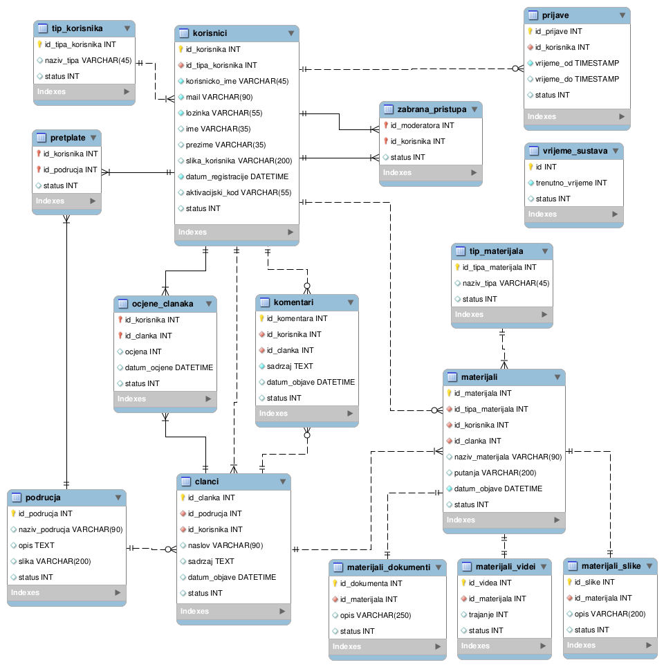
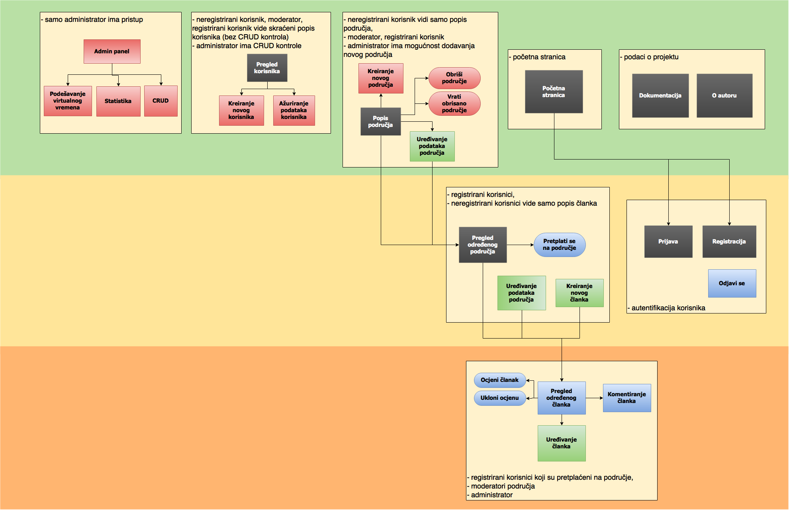

Dokumentacija projekta
opis projektnog zadatka
Vodič za preživljavanje
opis projektnog rješenja
Korišten je samostalno izrađen php framework koji se temelji na MVC-u
Ajax upiti za određene dijelove rješenja (dobavljanje komentara za članak, dobavljanje članaka za određeno područje, dobavljanje podataka o tablici (admin-panel) ).
Postoje 4 tipa korisnika:
- Neregistrirani korisnik (Gost)
- Registrirani korisnik
- Moderator
- Administrator
bitne odrednice projektnog rješenja (ERA model)
popis i opis skripata, mapa mjesta, navigacijski dijagram
Popis i opis skripata
-
- app/
- direktorij koji sadrži datoteke framework-a
-
- controllers/
- popis svih kontrolera (skripte koje se direktno pozivaju iz url-a) npr. za pozivanje kontrolera 'index_controller.php' url jest "/index"
-
- library/
- popis osnovnih klasa u frameworku
-
- auth.php
- rad sa autorizacijom i autentifikacijom korisnika
- cacher.php
- za poboljšanje učitavanja predložaka ( engl. templates) (prvo učitavanje .tpl datoteke se radi direktno iz datoteke, a svako sljedeće korištenje se radi iz spremljenog "keširanog" predloška)
- controller.php
- klasa koja predstavlja bilo koji kontroler (svi ostali kontroleri nasljeđuju navedenu klasu
- crud.php
- -
- database.php
- rad sa bazom podataka
- functions.php
- dodatne funkcije koje se koriste (autoloader, čiščenje GET/POST varijabli, postavljanje ENVIRONMENT-a i sl.)
- mailer.php
- rad sa mail servisom
- model.php
- klasa koja predstavlja bilo koji model (svi ostali modeli nasljeđuju navedenu klasu
- router.php
- klasa koja služi za pravilno učitavanje kontrolera, te je u mogućnosti prikazati stranicu pogreške ako nema traženog kontrolera ili nije moguće pokrenuti određenu akciju unutar kontrolera
- server_time.php
- rad sa virtualnim vremenom (dobavljanje vremena sa arka.foi.hr)
- session.php
- rad sa sesijom
- template.php
- klasa koja predstavlja bilo koji predložak (svi ostali predlošci nasljeđuju navedenu klasu
- uploader.php
- rad sa učitavanjem/prijenosom(engl. uploadom) datoteka na server
- view.php
- klasa koja predstavlja bilo koji pogled (svi ostali pogledi nasljeđuju navedenu klasu
-
- models/
- sadrži popis modela
-
- plugins/
- sadrži dodatne biblioteke koji se koriste u prijektu
-
- templates/
- sadrži predloške
-
- tmp/
- privremene datoteke (log-ovi pogrešaka)
-
- views/
- sadrži poglede
- config.php
- glavna konfiguracijska datoteka
- init.php
- skripta koja služi za pokretanje router-a i ostalih komponenti framework-a
- project_data.php
- konfiguracijska datoteka za projekt
-
- site/
- direktorij koji sadrži datoteke vezane za sam projekt
-
- css/
- sadrži datoteke za stiliziranje izgleda stranice
-
- style.css
- glavna stilska datoteka
-
- files/
- direktorij unutar kojeg se nalaze svi upload-ani materijali
-
- gfx/
- sadrži grafičke datoteke za prikaz na stranici
-
- js/
- sadrži .js datoteke
-
- script-admin.js
- .js datoteka koja se koristi za admin-panel
- script-area.js
- .js datoteka koja se koristi za stranicu područja
- script-articles.js
- .js datoteka koja se koristi za stranicu članak
- script.js
- standardna .js datoteka
-
- dokumentacija.html
- stranica koja je upravo prikazana, sadrži detalje o projektu
- index.php
- stranica koja je upravo prikazana, sadrži detalje o projektu
- o_autoru.html
- sadrži podatke o autoru projekta
- robots.txt
- sadrži postavke za robote (za preuzimanje podataka o web-mjestu)
- .htaccess
- sadrži postavke da se svaki upit šalje na skriptu index.php kao GET parametar s ključem "url", time se dobiva da index.php određuje daljnje izvršavanje programskog koda i centralizacija upita za web-stranicom
Mapa mjesta, navigacijski dijagram
{kind=link}
Popis i opis korištenih tehnologija i alata
Tehnologije
- HTML5, CSS3
- trenutna tehnologija za prikaz web stranica
- PHP5 - OOP, MVC
- objekni pristup, korištenje model-view-controller
- jQuery
- olakšano korištenje js-a
- MySQL
- baza podataka
Alati
- CodeLite
- korišteno za uređivanje programskog koda PHP i JS
- Apache (LAMP)
- korišten lokalni server za testiranje
- MySQL Workbench
- korišten za izradu ERA-modela i kreiranje baze podataka
- Git (github)
- korištenje za verzioniranje koda
- Inkscape
- za uređivanje vektorske grafike
- Gimp
- za uređivanje rasterske grafike
- Draw.io
- online alat za izradu dijagrama
popis i opis vanjskih (tuđih) modula/biblioteka i njihovo korištenje u skriptama i sl.
- dataTables
- za stiliziranje tabličnih prikaza